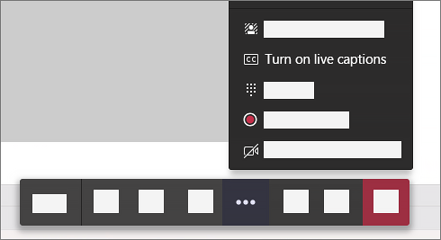
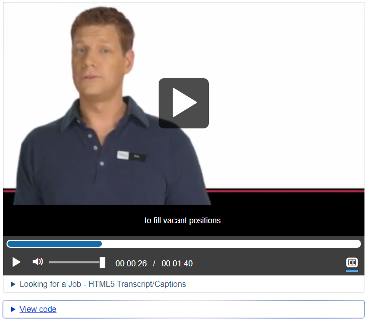

Captions
Captions (overview)
Captions are a text version of the speech and other audio information needed to understand the content. They are synchronized with the audio and usually shown in a media player when users turn them on. Captions benefit users who are deaf, users who are hard of hearing and users who have difficulty processing auditory information. Captions are also used by people without disabilities in a variety of situations:
- In loud environments where users cannot hear the audio.
- In quiet environments where users cannot turn on sounds.
- By users who understand the written language better than the spoken language.
- By users learning to read a new language.
- To better understand content with redundant audio and text, helping users focus and retain information.
- To help locate the document via search. Closed captions are indexed by search engines, making the page more findable.
Captions are usually shown in a media player when users turn them on, called “closed captions”. They can also be “open captions”, which are always displayed and can’t be turned off (or customized).
Captions vs subtitles
The terms “captions” and “subtitles” are used differently in different parts of the world. For our purposes:
- Captions convey spoken dialogue and other audio information needed to understand the content, including sound effects, music, laughter, speaker identification and location. They’re usually in the same language as the spoken audio, but translations can be offered on separate captions tracks.
- Subtitles convey only the spoken dialogue, aimed at hearing people who have difficulty understanding the language of the video. They’re often a translation to a different language.
Subtitles and captions are both implemented with a <track> element (of type “captions” or “subtitles”) referencing a timed text file (see Using the <track> element, below).
Do you need captions?
For pre-recorded media:
- Video with audio requires captions.
- Video-only content has no audio information needing captions (not applicable).
- Audio-only content does not require captions; it does require a transcript.
For live media broadcasts on the web:
- Video with audio requires captions.
- Audio-only content requires captions or a transcript.
Live captions
Communication Access Realtime Translation (CART) is the live, word-for-word transcription of speech to text so that individuals can read what is being said in group settings. A professional CART writer transcribes the spoken word into written English or French text using a stenotype machine, laptop and real-time software. The text is then displayed on a secure website, laptop computer or projected onto a large screen.
CART services are typically provided on-site at live training, meetings, events, conventions and conferences.
However, CART services can also be provided remotely for events like web casts.
When CART is provided remotely, the CART writer attends the meeting from an off-site location to listen and transcribe. The text is streamed to a secure website for viewing. Multiple users can simultaneously login to the secure website to display the text on their computers, tablets or mobile devices.
The live captioned text can be saved and edited for use as a captions file for any posted video recordings.
Live automated captions are also available in Microsoft Teams meetings. Teams can detect what is said in a meeting, and present real-time automated captions. To use live captions in a meeting, go to your meeting controls and select the More options button … > Turn on live captions.
See automated captions section below.
Alt text: “Screenshot of MS Teams meeting’s call controls to show the option to turn on live captions"
Bad example: Live announcement without captions
This example illustrates the inconvenience with regards to live announcements and challenges it could lead to for people who have difficulty hearing. This live flight announcement video does not have live captions to give the deaf audience the equivalent information.

Captions for pre-recorded video with audio
Good example: Captions for pre-recorded video with audio (inline HTML)
The WET Media Player can weave captions and descriptive transcript together inline in the HTML, in the <figcaption> element:
- <p> elements holding descriptive transcript take the class=”wet-boew-vd" attribute.
- <span> elements holding captions take the class=”wd-tmtxt”, data-begin and data-dur attributes. JavaScript identifies captions by these attributes and displays the captions dynamically in a <div> element directly below the video.
The WET media player is described below in the section Media Player Accessibility.
View HTML
Code begins
<figure class="wb-mltmd">
<video poster="demo/video1-en.jpg" title="Looking for a Job">
<source type="video/mp4" src="https://wet-boew.github.io/wet-boew-attachments/videos/video1-en.mp4" />
<track src="#inline-captions" kind="captions" data-type="text/html" srclang="en" label="English" />
</video>
<figcaption>
<details id="inline-captions">
<summary>Looking for a Job - HTML5 Transcript/Captions</summary>
<p class="wet-boew-vd"><strong>(Animated pen draws a red line that leads into the text Looking for A Job)</strong></p>
<p class="wet-boew-vd"><strong>(Cut to a medium shot of the Host. LINE DRAWING GRAPHIC: Stick person appears and waves.)</strong></p>
<p><span class="wb-tmtxt" data-begin="2.50s" data-dur="3.84s">Hi, my name is Eric, and I'm a Service Canada employee.</span></p>
[…]
</details>
</figcaption>
</figure>
Code ends
Good example: Captions for pre-recorded video with audio (TTML)
In addition to inline HTML5 captions, the WET media player supports Timed Text Markup Language (TTML) caption file formats (XML).
Use the <track> element to specify text tracks for <audio> or <video> elements.
View HTML
Code begins
<video poster="/content/dam/canada/health-canada/migration/healthy-canadians/alt/videos/ppe-high-risk-epi-risque-eleve.jpg" title="Personal Protective Equipment - Higher Risk Exposure">
<source src="/content/dam/hc-sc/migration/hc-sc/ahc-asc/alt_formats/video/media/video/ppe-high-risk-epi-risque-eleve-eng.mp4" type="video/mp4"/>
<track data-type="text/xml" kind="captions" label="English" src="/content/dam/canada/health-canada/migration/healthy-canadians/alt/videos/ppe-high-risk-epi-risque-eleve-eng.xml" srclang="en"/>
</video>
<tt xmlns="http://www.w3.org/2006/04/ttaf1" xmlns:tts="http://www.w3.org/2006/04/ttaf1#styling" xml:lang="en">
<head>
<styling>
<style id="defaultSpeaker" tts:fontSize="12px" tts:fontFamily="SansSerif" tts:fontWeight="normal" tts:fontStyle="normal" tts:textDecoration="none" tts:color="white" tts:backgroundColor="black" tts:textAlign="left"/>
<style id="defaultCaption" tts:fontSize="12px" tts:fontFamily="SansSerif" tts:fontWeight="normal" tts:fontStyle="normal" tts:textDecoration="none" tts:color="white" tts:backgroundColor="black" tts:textAlign="left"/>
</styling>
</head>
<body id="thebody" style="defaultCaption">
[...]
<div begin="00:00:87.50" end="00:00:91.06">and maintain these essential skills on an ongoing basis.</div>
<div begin="00:00:91.06" end="00:00:94.46">We recommend watching these videos regularly as a reminder</div>
<div begin="00:00:94.46" end="00:00:97.63">of the important skills learned during in-person training.</div>
[…]
</body>
</tt>
Code ends
Source:
Good example: Captions for pre-recorded video with audio (YouTube source)
The YouTube player has built-in accessibility support for users who are deaf or hard of hearing. The majority of videos in the Canada.ca health-related video gallery use YouTube as the source for the video. Captions can be added and edited directly using the YouTube platform.
Use the <iframe> element to specify the source to the YouTube video.
Code begins
<div class="iframe-container">
<iframe width="560" height="315" src="https://www.youtube.com/embed/kQuDwArlYJM?cc_load_policy=1&hl=en&cc_lang_pref=en" frameborder="0" allow="accelerometer; autoplay; clipboard-write; encrypted-media; gyroscope; picture-in-picture" allowfullscreen></iframe>
</div>
Code ends
Automatic captions
Automatic captions typically provide about 60-70% accuracy, which fails WCAG 2.1: if the "captions" do not include all the dialogue (either verbatim or in essence) as well as all important sounds then the captions are not real captions.
However, automatic captions can be used as a starting point for developing accurate captions and transcripts.
Presenting and styling captions
Requirements for presenting and styling captions consist mostly of community best practice rather than WCAG Success Criteria or Techniques. Only the 3:1 contrast ratio is required to meet a WCAG Success Criterion.
This is a shortlist of requirements. The Captioning Key website offers more best practice for presenting and styling captions.
- Captions are synchronized with the audio.
- Captions are typed in mixed case letters.
- Captions use no more than three lines at a time.
- Put a new sentence on a new line.
- Maximum number of characters per line is 32 characters.
- Insert caption line breaks at logical points rather than in the middle of a phrase.
- Default colors are white text on a black background.
- Default color contrast ratio between font color and background color is a minimum of 3:1 (font size at least 18 points).
- Default font size is at least 22pt.
- Position captions to not obscure on-screen text, people’s faces and other important visual information.
- Ensure a minimum of 1.5 seconds gap in between captions.
- Remove captions from long silent intervals. Captions have a maximum duration of 6 seconds.
Customizing captions
Users can customize the visual appearance of captions in the operating system. Some media players also support customization.
Good example: Captions styling in Windows

Good example: Captions styling in MAC

Caption file formats
There are many caption file formats. These three are supported by the WET media player and the MS Stream video player, between them:
- HTML5 data: a custom solution used by the WET media player that combines captions and descriptive transcript in one source. See Good Example: Captions for pre-recorded video with audio, above.
- TTML: supported by the WET media player.
- WebVTT: supported by Microsoft Stream (the only format it supports). WebVTT is also the standard format recommended by the HTML5 specification.
You can use this free online subtitle converter to convert different caption file formats.
Basic file formats require only time codes. These advanced file formats provide more control over the styling and positioning of your captions.
Basic file formats
The basic file types have no styling.
|
Format name |
File extension |
More info |
|
.srt |
Only basic versions of these files are supported. No style info (markup) is recognized. The file must be in plain UTF-8. |
|
|
.sbv or .sub |
Only basic versions of these files are supported. No style info (markup) is recognized. The file must be in plain UTF-8. |
|
|
MPsub (MPlayer subtitle) |
.mpsub |
"FORMAT=" parameter is supported. |
|
.lrc |
No style info (markup) is recognized |
Advanced file formats
Use these file formats if you want to have more control over the styling (markup) or positioning of your captions.
|
Format name |
File extension |
More info |
|
SAMI (Synchronized Accessible Media Interchange) |
.smi or .sami |
Only timecodes, text, and simple markup (<b>, <i>, <u>, and thecolor= attribute within a <font>) are supported. Positioning is not supported. |
|
RealText |
.rt |
Only timecodes, text, and simple markup (<b>, <i>, <u>, and thecolor= attribute within a <font>) are supported. Positioning is not supported. |
|
.vtt |
In initial implementation. Positioning is supported, but styling is limited to <b>, <i>, <u> since CSS class names are not yet standardized. |
|
|
TTML (Timed-Text Markup Language) |
.ttml |
In partial implementation. SMPTE-TT extensions supported for CEA-608 features. iTunes Timed Text (iTT) file format is supported; iTT is a subset of TTML, Version 1.0. Styling and positioning aresupported. |
|
DFXP (Distribution Format Exchange Profile) |
.ttml or .dfxp |
These files types are interpreted as TTML files. |
Good example: WebVTT caption file format
WEBVTT
00:02.500 --> 00:06.340
<v Eric>Hi, my name is Eric, and I'm a Service Canada employee.
00:06.340 --> 00:08.210
<v Eric>You may have heard the old saying that,
00:08.21 --> 00:10.040
<v Eric>when you're out of work, finding a job is your
00:10.040 --> 00:11.75
<v Eric>full-time occupation.
Good example: TTML caption file format
<tt xmlns="http://www.w3.org/2006/10/ttaf1" xmlns:tts="http://www.w3.org/2006/10/ttaf1#style" xml:lang="en">
<head>
<styling>
<style id="defaultSpeaker" tts:fontSize="12" tts:fontFamily="Arial" tts:fontWeight="normal" tts:fontStyle="normal" tts:textDecoration="none" tts:color="white" tts:backgroundColor="black" tts:textAlign="center"/>
<style id="defaultCaption" tts:fontSize="12" tts:fontFamily="Arial" tts:fontWeight="normal" tts:fontStyle="normal" tts:textDecoration="none" tts:color="white" tts:backgroundColor="black" tts:textAlign="center"/>
</styling>
</head>
<body style="defaultCaption" id="thebody" xml:id="b1">
<div begin="1.40s" dur="3.33s">Hi, my name is Eric, and I'm a Service Canada employee.</div>
<div begin="4.73s" dur="2.73s">Each and every day, Canadians are improving their job</div>
<div begin="7.46s" dur="2.14s">skills or changing their career paths.</div>
<div begin="9.60s" dur="1.66s">Are you thinking about taking that step?</div>
[…]
</body>
</tt>
Using the <track> element
The <track> element lets you specify timed text tracks for an <audio> or <video> element.
<video
controls
src="/videos/compliance.mp4">
<track
default
kind="captions"
srclang="en"
src="/videos/tracks/compliance.vtt" />
</video>
Attributes
- default
- Indicates that the tracks should be enabled, unless the user has indicated in preferences that another track is more appropriate.
- kind
- Indicates how the text track is going to be used. Possible values are:
- Textual translation of content.
- Textual version of the audio content for users who are deaf.
- Textual description of the visual content for users who are blind.
- Used when the user is navigating the media resource.
- Tracks used by scripts. Not visible to users.
- English: en
- French: fr
What is included in captions?
For what to include in captions, see the section Transcribing Audio to text.
Adding captions on YouTube platform
You can add captions to YouTube videos by uploading a caption file:
- Sign into YouTube Studio.
- From the left menu, select Subtitles.
- Click the video that you'd like to edit.
- Click Add Language and select your language.
- Under subtitles, click Add.
- Select Upload file.
- Choose between With timing or Without timing, then select Continue.
- Choose a file to upload.
- Select Save.
Youtube supports numerous subtitle and closed caption file formats including SRT, SBV, SUB, MPSUB, LRC, CAP, SAMT, RT, VTT, TTML and DFXP.
YouTube also allows you to auto-sync transcripts, type captions manually, and automatically create captions using their speech recognition technology.
Adding captions on Microsoft Stream platform
You can add captions to MS Stream videos by uploading a caption file:
- In Stream, find the video you want to edit.
- Click on the pencil icon to Update video details

- In the Options panel, click Upload a caption file. Only VTT file format is supported.